菜单栏、通知与搜索
其他都在屏幕上方
当前应用的菜单、声音和亮度、日历、通知和搜索，都从屏幕顶部这一栏开始。点按它不会抢走你正在输入的应用的焦点。
菜单栏
01
当前应用的菜单，就在上方
有菜单的应用，按原样显示它的菜单。浏览器、文件资源管理器、Notion 这类没有菜单的应用，则把常用快捷键做成菜单。点按菜单项，快捷键会直接送到应用，在远程桌面等按键不好传递时也很方便。
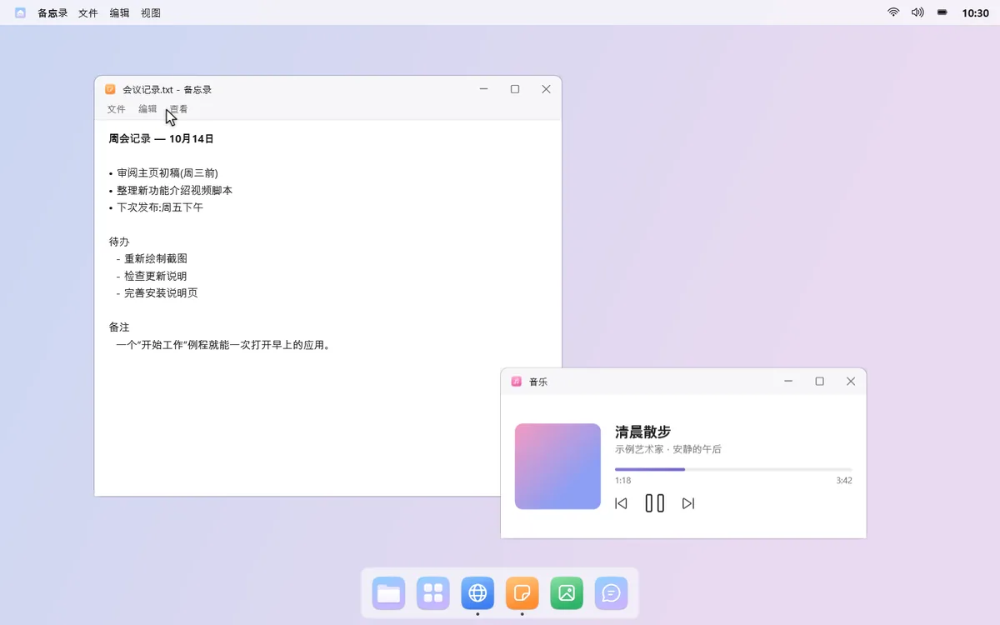
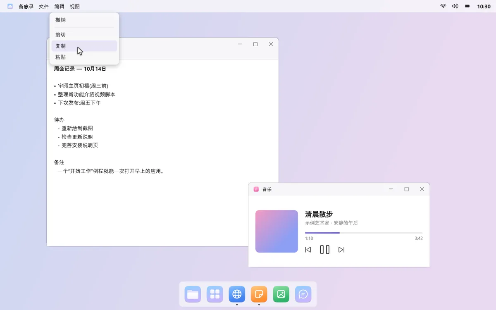
02
声音和亮度，一键调整
在控制中心可以直接调整屏幕亮度、夜间模式和电源模式。声音菜单切换输出、输入设备和音量，蓝牙菜单一点就能连上耳机。
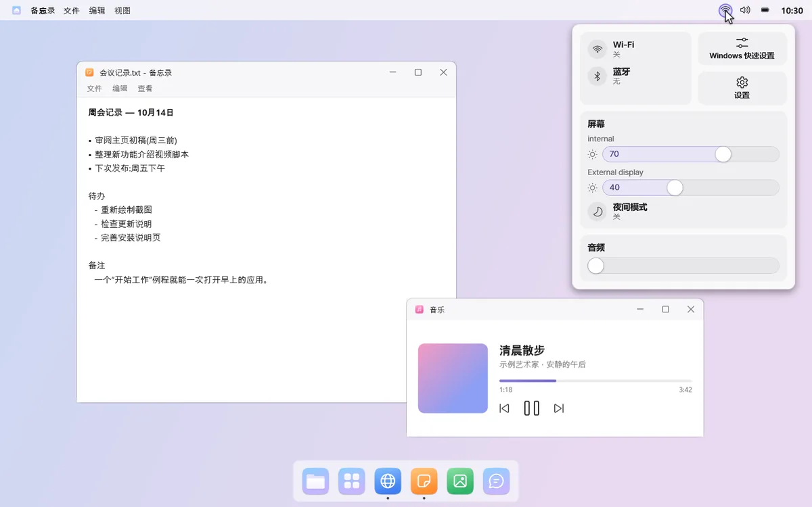
03
点按时钟，打开日历
日历会显示韩国公共假日和农历（暂不支持其他国家和地区的节假日）。粘贴 Google 日历或 Outlook.com 的 iCal 地址，日程也会一起显示。
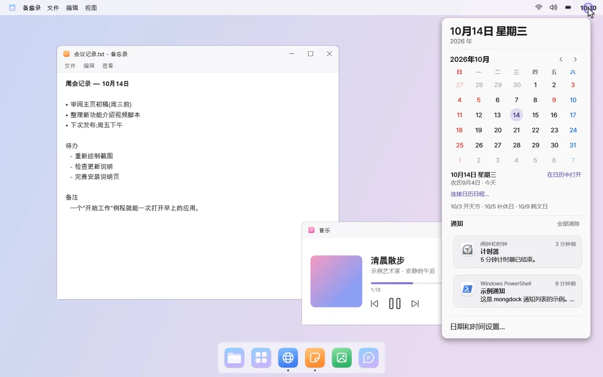
通知
04
右上角的安静横幅
Windows 通知以横幅显示在屏幕右上角，较长的通知点按即可展开。错过的通知，点按时钟就能按应用分组查看。
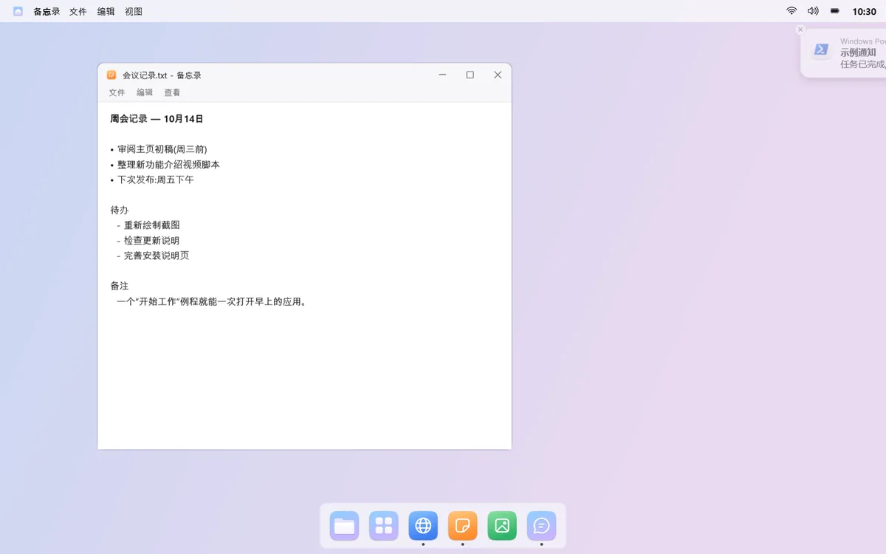
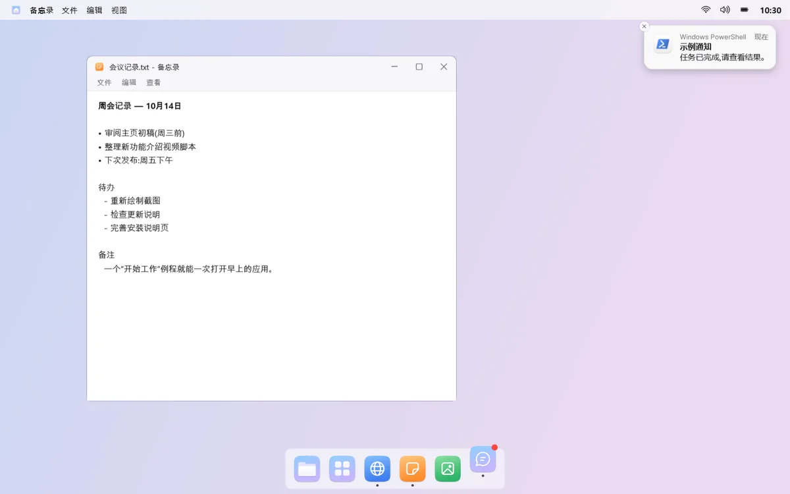
05
跳两下，留个点
收到通知时，该应用的程序坞图标会跳两下，然后留下一个红点。不会一直跳，也可以按应用分别关闭。
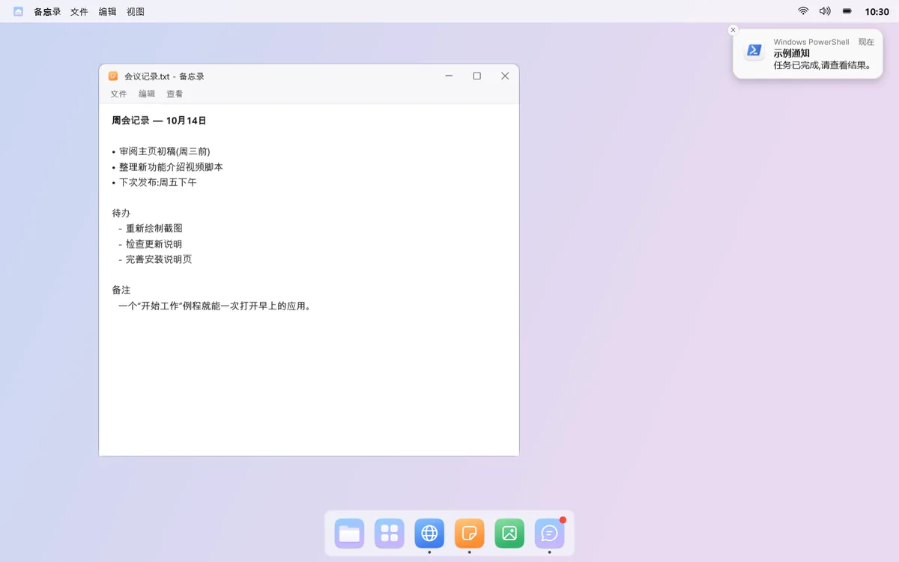
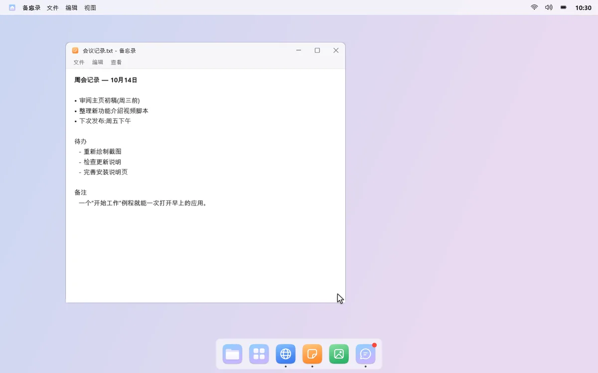
mongdock 搜索
06
敲几个字就找到
按下快捷键，屏幕中央会打开搜索框。应用、Windows 设置、文件和文件夹，敲几个字就能找到，比如输入“计”就能找到计算器。
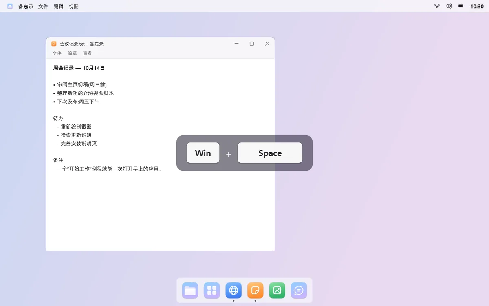
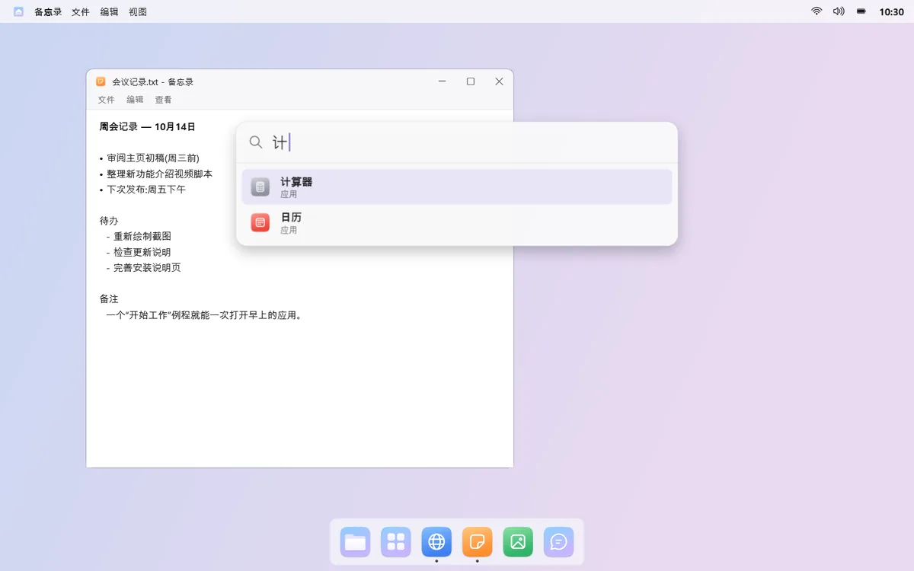
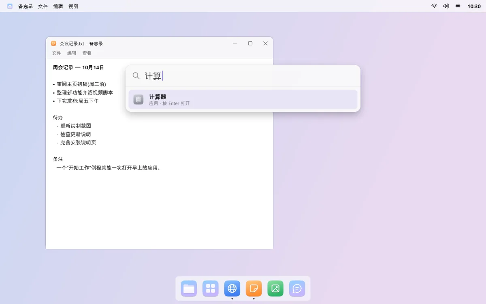
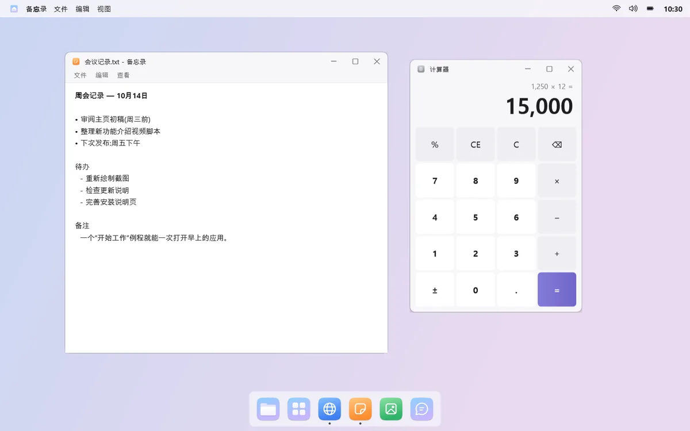
07
算数、网页搜索也行
输入“200*15%”这样的算式，答案就显示在最上面，按 Enter 即可复制。找不到时，可以把同样的关键词交给 Windows 搜索或网页搜索。

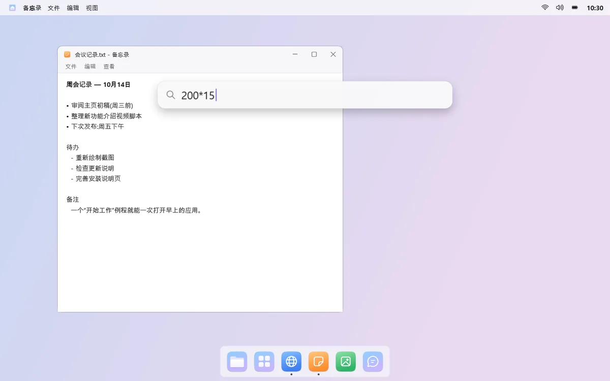
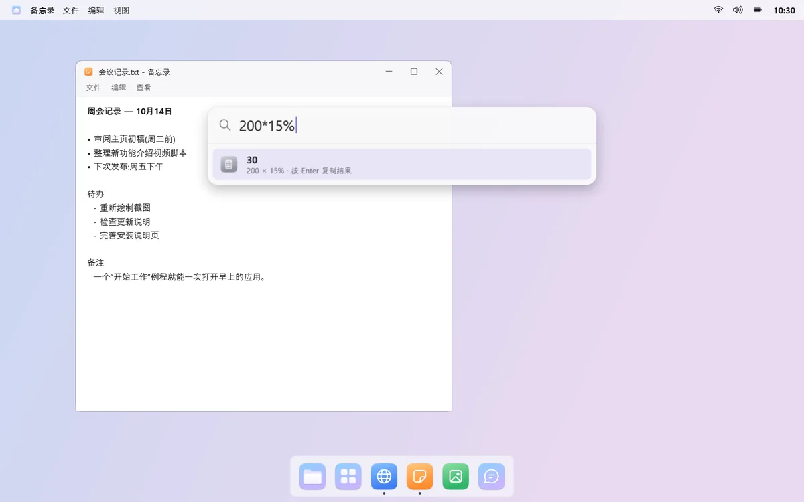
须知
- 第一次更改通知声音后，需要注销并重新登录才会生效。
- 外接显示器的亮度只能在支持亮度调节（DDC/CI）的显示器上调整。